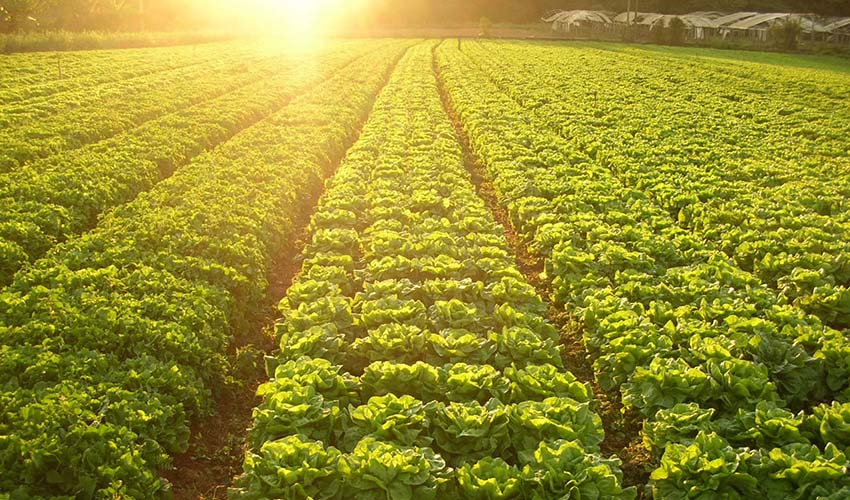

A agricultura familiar é uma prática de produção de alimentos e produtos para comercios proximos como café,feijão,milho.Ela serve pros piquenos produtores
pra consumo deles e para comercios proximos.A agricultura familiar é uma atividade que tem se adaptado ao avanço da tecnologia e dos métodos de produção, resultando em melhorias significativas para as famílias agricultoras. O uso de tecnologias inovadoras, como sistemas de irrigação, sensores de solo e clima, além de ferramentas de gestão dae ddos, têm permitido aos agricultores familiares aumentar a produtividade, melhorar a qualidade dos produtos e reduzir os custos de produção. permitido aos agricultores familiares aumentar a produtividade, melhorar a qualidade dos produtos e reduzir os custos de produção. A tecnologia também tem sido fundamental na luta contra a pobreza e na garantia da segurança alimentar. O acesso a informações e ferramentas tecnológicas, como aplicativos de gestão agrícola e plataformas de comercialização, tem permitido que os agricultores familiares acessem novos mercados e ampliem suas oportunidades de vendas, garantindo a sustentabilidade de suas atividades econômicas. o governo tem papel fundamental na popularização do uso de tecnologias na agricultura familiar, oferecendo programas de capacitação, financiamento e apoio a projetos inovadores. Além disso, a parceria entre universidades, empresas e agricultores é fundamental para a criação de soluções tecnológicas eficazes e acessíveis aos agricultores familiares.O avanço da tecnologia tem transformado a forma como a agricultura familiar é conduzida, possibilitando aos agricultores familiares melhorias significativas em suas atividades econômicas e garantindo a segurança alimentar e a redução da pobreza. É importante continuar investindo em tecnologia para a agricultura familiar, para que esses agricultores possam alcançar o sucesso econômico e realizar seus sonhos.
